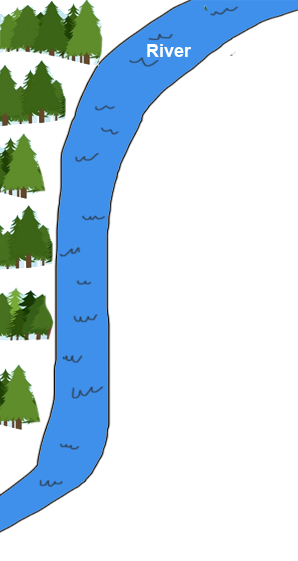
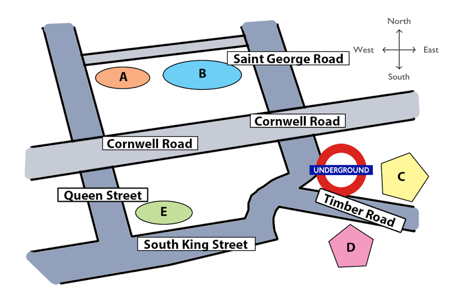

Это не ещё один «музейный» урок и не параллель к L4. Это сборник из разных Sept-Nov 2026 отчётов: whale culture, biophilic design, mother-tongue education для Reading; furniture rental call, career counseling, sleep psychology lecture для Listening. Каждый фрагмент привязан к источнику (bandladder / ielts9.io / simplyielts). Разные домены, разные форматы вопросов, разные голоса. Таймер — на твой выбор, не экзаменная симуляция.
⚠️ Честно: passage ниже написаны мной в стиле подтверждённых Sept-Nov 2026 reports. Темы и форматы вопросов — настоящие сливы. Текст самого passage — моя стилизация (не Cambridge). Для аутентичного Cambridge-текста — ссылки сверху, или открывай study4.com на отдельной вкладке.
R1 Whale culture · R2 Biophilic design · R3 Mother tongue in education. Таймер 10 мин на каждый — Band 7.5 pace.
1For most of the twentieth century, the word culture was reserved almost exclusively for humans. Culture, it was agreed, meant knowledge or behaviour transmitted from one individual to another by learning rather than by genetic inheritance, and refined over successive generations. In the past two decades, however, a steadily growing body of fieldwork has forced marine biologists to apply the term, cautiously, to several species of cetacean — most convincingly to sperm whales, humpbacks, and killer whales.
2The most influential case for a kind of whale culture has been built by Hal Whitehead and his colleagues at Dalhousie University, who have followed sperm-whale pods in the eastern Pacific since the mid-1980s. Whitehead's team has established that each pod uses a distinctive sequence of clicks — a coda — as a greeting and identifier. These codas are not inherited: calves can be shown to adopt the pattern of the group they are raised in, not of their biological mother if the two happen to be separated. Over a region as large as the Pacific, codas sort into roughly five discrete dialects, each stable for decades.
3Humpbacks offer an even more dramatic example. Male humpbacks in a given breeding ground sing the same elaborate song, which may last up to thirty minutes and incorporate several themes. The song is not static. Each breeding season every male in the population adopts small revisions, and over roughly five years the song can transform almost beyond recognition. The British biologist Ellen Garland has traced the eastward transmission of successive versions across the entire South Pacific, from eastern Australia to French Polynesia, year by year — a scale and precision of social copying unmatched outside humans.
4Killer whales present a different kind of case. Populations around Vancouver Island split, decades ago, into two groups that share the same waters but almost never interact: so-called residents, which specialise in salmon, and transients, which hunt seals and other marine mammals. The two groups use different hunting techniques, different acoustic calls, and refuse to breed with one another even when opportunity exists. Luke Rendell at the University of St Andrews has argued that this amounts to incipient speciation driven by what is, in effect, a cultural barrier.
5Not everyone is convinced. The sceptical objection, articulated most forcefully by evolutionary biologists working from a more conservative tradition, is that none of these behaviours has yet been shown to accumulate complexity across generations — the defining feature of human culture. Whales may copy and transmit, the sceptics concede, but each generation essentially starts over; they do not build on what was learned before. Defenders reply that the time depth is simply too short — cetacean generations are long, and the systematic observation only forty years old.
1The term biophilia, meaning "love of life", was popularised in the 1980s by the Harvard biologist Edward O. Wilson, who argued that human beings have an evolved psychological need for close contact with the natural world. In the 2000s, the American ecologist Stephen Kellert took the idea into architecture, coining the phrase biophilic design to describe deliberately bringing natural elements — light, plants, water, materials, views — into interior spaces. Kellert's premise was simple: that the millennia our ancestors spent outdoors have left us poorly adapted to the flat, sealed, artificially lit boxes in which most of us now spend ninety percent of our time.
2Empirical support for the idea has accumulated steadily. A 2015 meta-analysis, by the consultancy Terrapin Bright Green, synthesised studies from offices, hospitals and schools across three continents. The consistent finding was a measurable boost — of between six and fifteen percent — in cognitive performance, patient recovery rates, or student attention when buildings incorporated at least some natural elements. The effect was strongest where multiple elements were combined: for instance, daylight plus views of greenery plus natural ventilation.
3Terrapin's own catalogue, published in the same year, codified fourteen separate "patterns" of biophilic design, grouping them into three families: direct experience of nature (sunlight, water, plants, airflow), indirect experience (natural materials, warm colours, representations of nature), and the quality of the space itself (prospect, refuge, mystery, risk). The patterns are deliberately atomic — a designer can apply any one of them without a full architectural overhaul, which has made the framework widely used by interior consultants retrofitting ageing office stock.
4Several flagship projects now embody the full approach. Amazon's Spheres in Seattle, opened in 2018, enclose some four thousand plants in a trio of transparent domes attached to the main office tower, as a shared breakout space for staff. In Milan, Stefano Boeri's Bosco Verticale covers the facades of two residential towers with roughly nine hundred trees and more than fifteen thousand smaller plants, which absorb carbon dioxide, dampen street noise, and provide habitat for insects and small birds. Both projects are expensive, both are widely imitated, and both are routinely cited in trade press as evidence that the biophilic premium is a worthwhile capital cost.
5Critics push back on two fronts. The first is that most of the published evidence relies on short-term studies of self-selected participants in novel environments, where simple novelty may inflate the measured benefit. The second is a cost objection: the materials, maintenance and water consumption of fully biophilic buildings place them well above the reach of mass construction, risking a two-tier built environment in which only wealthy occupants enjoy the proven benefits. The field, in short, is still arguing with itself about whether its headline findings will survive once the designs stop being novel.
1In most of the world's post-colonial states, the language in which young children first encounter formal schooling is not the one they speak at home. UNESCO has argued, in a succession of policy papers since 2003, that this mismatch is one of the single largest drags on primary-school attainment in low-income countries — and that teaching children initially in their mother tongue, with a gradual transition to the national or international language later, produces measurably better outcomes across the whole curriculum. Critics have responded that the recommendation, however well-intentioned, is practically unworkable in genuinely multilingual settings; the two positions have hardened rather than converged over the past twenty years.
2The strongest evidence for the mother-tongue-first position comes from a long-running experiment in Ethiopia. In the early 1990s, several regional governments began delivering the first six years of primary education in local languages — Amharic, Afaan Oromo, Tigrinya and others — rather than, as previously, in English. By the mid-2000s, carefully controlled studies by the research consortium ERA found that pupils in the mother-tongue regions outperformed their English-first peers not only in literacy but, strikingly, in science and mathematics as well, even when the final assessment was conducted in English. The result flatly contradicted the folk assumption that early immersion in English accelerates general attainment.
3Mozambique has gone further, pursuing bilingual education in sixteen Bantu languages alongside Portuguese. The reform has not been uniformly successful: the national government has struggled to produce textbooks in several minority languages, and newly trained teachers often find themselves posted to communities whose dominant language they themselves do not speak. The programme has nevertheless been expanded, chiefly because head teachers in participating schools report a sharp improvement in attendance and in pupils' willingness to speak in class.
4Not every attempt has worked. In Nepal, a 2015 initiative to extend mother-tongue instruction into the Terai lowlands quietly stalled within three years, partly because of resistance from parents who feared their children would be disadvantaged in competitive secondary-school entrance examinations held exclusively in Nepali. The case is often cited by critics as evidence that parental preference, in heavily tested educational systems, will outweigh any pedagogical argument for mother-tongue teaching.
5The debate is unlikely to be resolved cleanly. What the evidence does suggest, however, is that mother-tongue instruction works best where three conditions hold at once: textbooks and teachers are available in the local language, there is a transparent transition plan to the national language in later years, and the national examination system does not penalise pupils from mother-tongue streams. Where any of the three is missing, the policy tends either to stall, as in Nepal, or to produce uneven results, as in Mozambique.
★ Festival map (S2 pattern · 7 Qs) · ★★ Riverside Industrial Village (real IELTS-up 7.2 · 10 Qs) · ★★★ Area map labelling (real IELTS-up 9.2 · 5 Qs) · L1 Furniture rental call (S1 · form) · L2 Career counseling (S3 · MCQ+short) · L3 Sleep psychology (S4 · completion).


🔊 → RU → example → type the word. По 2-3 слова на каждый из 6 текстов.